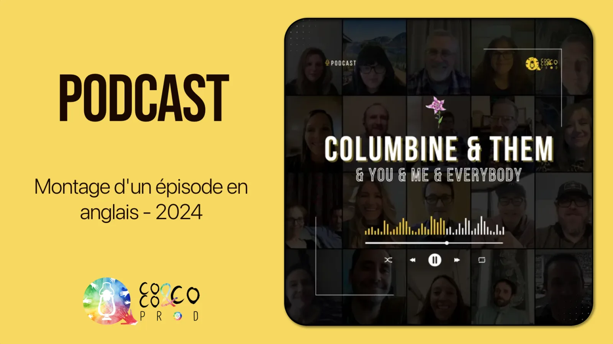

Long-form podcast interview editing - Coco & Co Prod
Editorial condensation and audio editing of a nearly three-hour English-language interview into a final episode of around 40 minutes.

Project summary
During my internship at Coco & Co Prod, I handled the audio editing of a long interview in English. The main task was to go from roughly three hours of raw material to a published 40-minute version without losing the key information or the coherence of the story.
The project therefore combined two strong demands: rigorous editorial condensation and audio quality clean enough for public release.
Context & challenge
- Very large source duration, around 3 hours
- Content in English with a high volume of information
- Need to preserve the meaning and intent of the speaker
- Short delivery timeline, which meant moving fast without losing quality
- Regular feedback from my internship supervisor at each key stage of the edit
Editorial challenge
The real work was not just to shorten the interview, but to rebuild a genuinely listenable episode from material that was long, dense and sometimes repetitive. I had to preserve meaning, the progression of the ideas and the personality of the speaker while removing what slowed down the listening experience.
Editing approach
- Complete review of the raw material and identification of the strongest sequences
- Thematic selection and removal of redundancies
- Narrative restructuring to make the listening flow more fluid
- Pre-mix to validate readability before final delivery
The cutting logic was guided by useful information: keep the passages that brought clear narrative value, and remove what slowed the listening without enriching the substance.
In practice, I kept the passages that moved the story forward, brought a strong angle or clarified an important idea, and removed digressions, repetitions or weak transitions that weighed the whole episode down.
Workflow & organization
The project progressed through short iterations with regular validation points with my internship supervisor. To stay on schedule, I worked from a precise editing plan, selection, assembly, cleanup, mix and export, with intermediate exports to secure the editorial decisions.
- Breaking the work into daily blocks to avoid tunnel vision
- Regular checkpoints before the mix and finalization stages
- Verification exports to validate the editorial substance before the final sonic polish

Three hours of raw material condensed into 40 minutes after review, editing and editorial tightening.
Difficulties & editorial decisions
- Condense heavily without weakening the main message
- Remove repetitions while preserving the progression of the story
- Maintain natural listening despite the amount of cuts
The main difficulty was making the cutting work disappear at the listening stage. A strong result should not feel like a brutal assembly, but like fluid, structured and coherent speech from beginning to end.
Mixing & mastering
The audio post-production phase aimed for a clean, natural and consistent result across the full episode.
- Voice cleanup with removal of mouth noises, clicks and overly marked breaths
- Tonal balancing through correction of problematic frequencies to improve intelligibility
- Dynamic control with light compression to stabilize speech levels
- Consistent final loudness for comfortable listening on headphones, speakers and mobile
Results
- Duration reduced from roughly 3 hours to roughly 40 minutes
- A final episode that is clearer, better paced and ready for distribution
- Main message preserved despite the heavy condensation
- Publication on the podcast’s platforms
- Stronger ability to deliver under tight deadlines
What this project helped me develop
- Ability to do genuine editorial work on long and dense material
- Ability to prioritize information without losing either the meaning or the speaker’s voice
- Ability to deliver a publishable result within a constrained timeline
- Combined control of narrative editing and sonic finishing